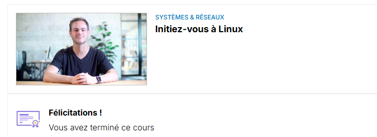
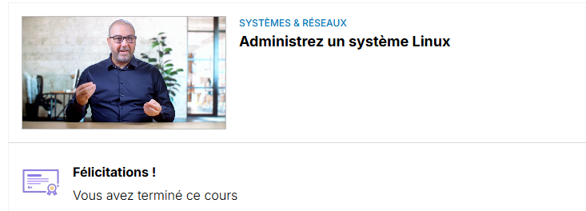
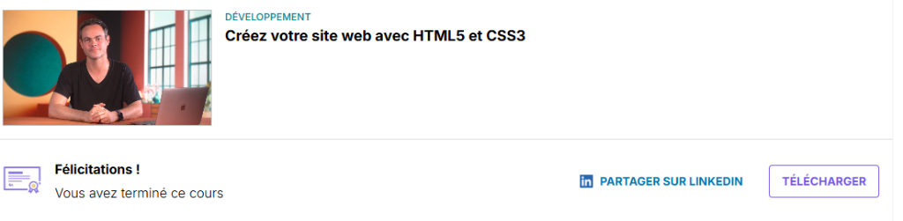
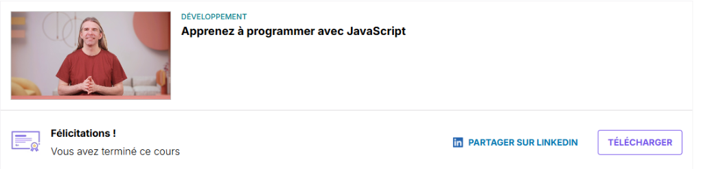

Épreuve de Certification
Parcours, Certifications & Projet Professionnel
Présenté par : Mohamed-Ali Filali
BTS SIO - Option SISR
Mon Parcours & Mon Projet
- Au Lycée : Spécialités Mathématiques et NSI (Numérique et Sciences Informatiques). C'est là que j'ai attrapé le virus de l'informatique.
- BTS SIO (SISR) : En arrivant en BTS, j'ai découvert l'aspect Système et Réseau (infrastructures, serveurs, routage). J'ai adoré concevoir et administrer des réseaux.
- La Révélation : Très vite, j'ai compris que concevoir un réseau ne suffit pas : il faut le sécuriser. Je me suis donc passionné pour la Cybersécurité.
- Mon Projet Professionnel : Poursuivre mes études pour devenir Ingénieur en Cybersécurité / Analyste SOC.
Ma Démarche de Certification
Pour atteindre mon projet professionnel, j'ai structuré mon apprentissage en 3 piliers :
- 1. Comprendre l'OS : Maîtriser le système d'exploitation cible (Linux).
- 2. Comprendre les Flux : Maîtriser le transport des données (Cisco CCNA).
- 3. Défendre et Analyser : Cybersécurité (SecNumAcadémie & Cisco CyberOps).
Pilier 1 : Fondations Système (Linux)
"On ne peut pas sécuriser ce que l'on ne maîtrise pas."


Cisco NDG Linux Essentials & Admin : J'ai certifié mes compétences sur l'administration système Linux (Ligne de commande, gestion des droits, scripting). C'est indispensable car la majorité des serveurs web et outils de hacking/sécurité tournent sous Linux.
Pilier 2 : Fondations Réseau (CCNA)
Comprendre comment communiquent les machines.

Cisco CCNA (Introduction to Networks) : Cette certification m'a permis d'assimiler les modèles OSI/TCP-IP, le routage, la commutation (Switching) et le fonctionnement matériel d'une infrastructure. Une étape clé avant de faire de la sécurité réseau.
Pilier 3 : L'Hygiène Cybersécurité

ANSSI - SecNumAcadémie : C'est la base de la cybersécurité en France. Cette certification m'a apporté une culture générale solide sur la sécurité : gestion des mots de passe, législation, RGPD, et sécurisation de l'environnement de travail.
L'Expertise Cybersécurité

Cisco CyberOps Associate : Le cœur de mon projet pro. J'y ai appris à surveiller un réseau, identifier des menaces, analyser des malwares et réagir face aux incidents de sécurité. C'est exactement le travail réalisé au sein d'un SOC (Security Operations Center).
Atout Supplémentaire : AppSec
Comprendre le fonctionnement des applications Web



Certifications OpenClassrooms (Web) : Bien que mon profil soit Réseau (SISR), j'ai passé des certifications en développement web (HTML/CSS/JS). Comprendre comment une page web est codée permet d'en détecter les vulnérabilités (failles XSS, injections).
Le Lien avec mon Projet Professionnel
L'ensemble de ces certifications n'est pas une simple accumulation, c'est un parcours logique vers la Cybersécurité :
- Je comprends l'architecture grâce au CCNA.
- Je maîtrise les serveurs cibles grâce à Linux.
- Je comprends la logique applicative via HTML/JS.
- J'identifie et contre les menaces grâce à SecNumAcadémie et CyberOps.
👉 Je suis aujourd'hui techniquement et théoriquement armé pour poursuivre vers mon objectif : Devenir Ingénieur Cybersécurité / Analyste SOC.